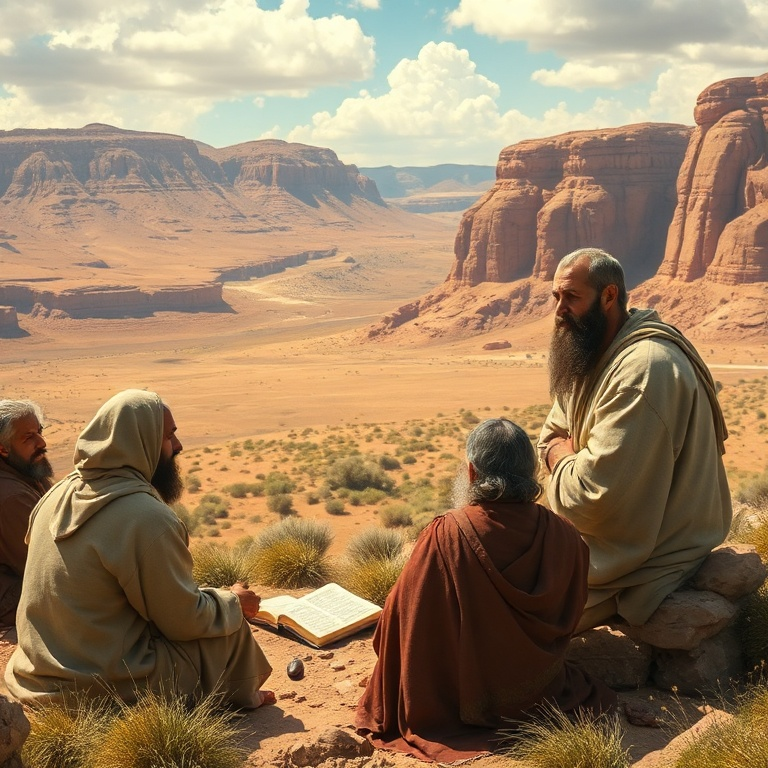
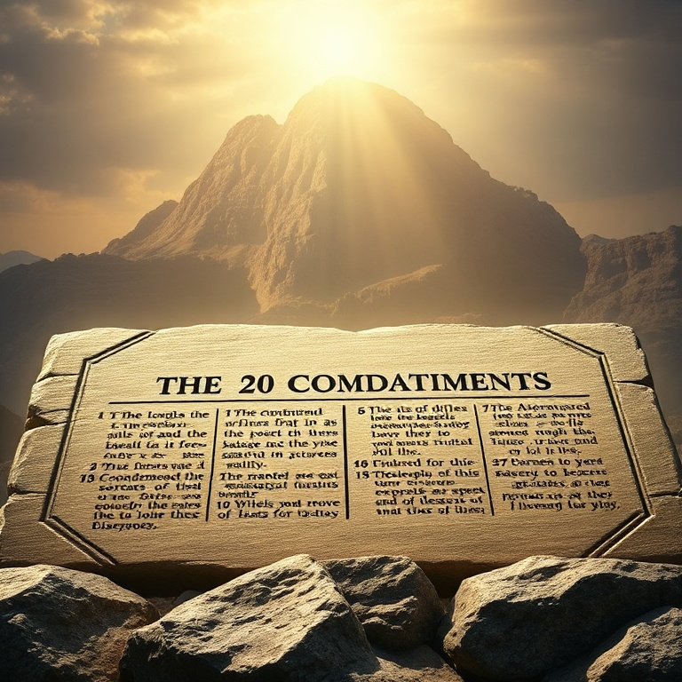

Introdução
Deuteronômio significa "segunda lei". O livro é composto pelos discursos de Moisés nas planícies de Moabe, pouco antes da entrada na terra prometida. Moisés revisita a lei dada no Sinai e a aplica à nova geração que estava prestes a cruzar o Jordão. É um livro de despedida, repleto de exortações e advertências. A estrutura do livro segue o formato dos tratados de aliança do Antigo Oriente Próximo. Moisés recorda o passado, apresenta as estipulações da aliança, enumera bênçãos e maldições e conclui com um chamado à fidelidade. Deuteronômio não é apenas repetição, mas interpretação e aplicação da lei para um novo contexto. A mensagem central de Deuteronômio é o amor de Deus por Israel e o chamado para que Israel ame a Deus em resposta. O Shemá — "Ouve, Israel, o Senhor nosso Deus é o único Senhor" — resume a teologia do livro. Deuteronômio nos chama a amar a Deus de todo o coração, alma e forças, e a transmitir essa fé às próximas gerações.
1) O Discurso de Moisés

1) O Discurso de Moisés
Moisés começou seu discurso recordando a jornada desde o monte Sinai até as planícies de Moabe. Ele lembrou ao povo como Deus os havia guiado, carregado e protegido durante quarenta anos no deserto. Moisés também recordou o episódio dos espias e a incredulidade que resultou na condenação daquela geração a perecer no deserto. Moisés enfatizou que a derrota de Seom e Ogue, reis amorreus, foi obra de Deus. A vitória não veio pela força de Israel, mas pela mão do Senhor. Ele lembrou ao povo que Deus pelejava por eles. Esse retrospecto histórico servia para fortalecer a fé da nova geração antes de enfrentar os desafios da conquista. Moisés também mencionou a organização judicial que instituiu, nomeando juízes para ajudar no julgamento do povo. Ele exortou os juízes a julgarem com justiça, sem parcialidade, pois o julgamento pertence a Deus. A justiça social era parte integrante da vida do povo de Deus. O discurso de Moisés estabelece o tom de todo o Deuteronômio: lembre-se do que Deus fez, obedeça à sua voz e confie em suas promessas. A memória é fundamental para a fé. Esquecer os feitos de Deus leva à incredulidade e à rebelião. Recordar é o primeiro passo para a obediência.
2) Os Dez Mandamentos Revisitados

2) Os Dez Mandamentos Revisitados
Moisés repete os Dez Mandamentos para a nova geração. A lei não mudou, mas a aplicação ganha novo contexto. O primeiro mandamento continua sendo o mais importante: não ter outros deuses diante do Senhor. Israel devia exclusividade a Deus porque ele os havia libertado do Egito e feito deles seu povo peculiar. O mandamento do sábado recebe uma nova motivação em Deuteronômio. Em Êxodo, o sábado era ligado à criação; em Deuteronômio, está ligado à libertação do Egito. Israel deveria dar descanso aos seus servos porque foram escravos no Egito e Deus os libertou. A obediência aos mandamentos fluía da gratidão pela redenção. Moisés enfatizou que a lei não era pesada ou impossível. Ela estava ao alcance de Israel — não no céu, nem além do mar, mas na boca e no coração do povo. Paulo usaria essa passagem para falar da justiça que vem pela fé. A lei revela a vontade de Deus, mas é o evangelho que nos capacita a cumpri-la. Os mandamentos são a expressão do caráter de Deus e do seu desejo para o relacionamento com seu povo. Eles protegem a vida, a família, a propriedade e a dignidade humana. Amar a Deus é guardar seus mandamentos, não como meio de salvação, mas como resposta de gratidão pela graça recebida.
3) Bênçãos e Maldições
3) Bênçãos e Maldições
Deuteronômio apresenta de forma vívida as bênçãos da obediência e as maldições da desobediência. Se Israel obedecesse a Deus, seria abençoado na cidade e no campo, nos filhos e nas colheitas, na entrada e na saída. Deus prometia chuva no tempo certo, fartura e vitória sobre os inimigos. As maldições eram igualmente abrangentes. A desobediência traria maldição na cidade e no campo, doenças, seca, derrota militar e exílio. Moisés descreveu em detalhes as consequências terríveis da infidelidade à aliança. A história de Israel prova que essas maldições se cumpriram literalmente. As bênçãos e maldições não eram mero mecanismo de recompensa e punição. Elas revelavam o caráter santo de Deus e a seriedade da aliança. Deus é fiel para abençoar e para julgar. As maldições apontavam para a necessidade de um mediador que pudesse suportar o juízo em nosso lugar. Cristo se tornou maldição por nós, como escreveu Paulo. Ele levou sobre si todas as maldições que merecíamos para que pudéssemos receber as bênçãos de Abraão. Em Cristo, a maldição da lei foi anulada, e as bênçãos de Deus fluem para todos os que creem.
4) O Amor de Deus por Israel
4) O Amor de Deus por Israel
Deuteronômio revela o coração de Deus de maneira singular. Moisés declarou que Deus amou Israel não porque fosse grande ou numeroso, mas porque os amou. O amor de Deus é gratuito e soberano. Ele escolheu Israel por pura graça e manteve sua aliança por pura fidelidade. Deus é descrito como um Pai que disciplina seu filho. O cuidado de Deus por Israel no deserto — alimentando-o, vestindo-o e protegendo-o — é comparado ao cuidado de uma águia que ensina seus filhotes a voar. Deus carregou Israel como uma pai carrega seu filho em todos os caminhos. Moisés exortou Israel a circuncidar o coração. A obediência externa não era suficiente; Deus desejava um coração transformado. Essa circuncisão do coração é obra de Deus e aponta para a nova aliança que seria estabelecida através de Cristo. O amor de Deus não apenas exige resposta, mas também capacita para ela. Deuteronômio culmina com o grande mandamento: "Amarás o Senhor teu Deus de todo o teu coração, de toda a tua alma e de todas as tuas forças". Esse amor não é sentimento, mas compromisso. Amar a Deus é obedecer à sua palavra, andar em seus caminhos e ensinar seus mandamentos aos filhos. Jesus chamou este de o maior mandamento.
5) A Morte de Moisés e a Sucessão
5) A Morte de Moisés e a Sucessão
Moisés sabia que não entraria na terra prometida. Seu pecado em Meribá o impediu de cruzar o Jordão. Deus o levou ao topo do monte Nebo e lhe mostrou toda a terra de Gileade até Dã, toda a terra de Judá até o mar ocidental. Moisés viu a terra, mas não pisou nela. Sua morte se aproximava. Antes de morrer, Moisés abençoou cada tribo de Israel. Suas bênçãos proféticas ecoaram as de Jacó, declarando o futuro de cada tribo. A tribo de Levi recebeu a bênção do serviço sacerdotal, José recebeu bênçãos das alturas, e todas as tribos foram lembradas do cuidado de Deus. Moisés impôs as mãos sobre Josué, transferindo-lhe a liderança. Josué estava cheio do Espírito de sabedoria e era o homem escolhido por Deus para conduzir Israel à conquista da terra. Moisés encorajou Josué diante de todo o povo, dizendo-lhe para ser forte e corajoso. Moisés morreu na terra de Moabe, e Deus o sepultou em um vale, e ninguém soube onde estava seu túmulo. Israel chorou por Moisés durante trinta dias. Moisés foi o maior profeta de Israel, a quem Deus falava face a face. Sua morte encerra uma era, mas sua obra permanece. Ele aponta para Cristo, o profeta maior que haveria de vir.
Conclusão
Deuteronômio termina com a morte de Moisés e a sucessão de Josué. O livro é um testamento de amor e fidelidade. Moisés dedicou seus últimos dias a exortar o povo a amar a Deus e a guardar sua aliança. Suas palavras continuam ecoando através dos séculos. O livro de Deuteronômio nos desafia a amar a Deus de todo o coração. Assim como Israel foi chamado a ouvir e obedecer antes de entrar na terra prometida, somos chamados a ouvir a voz de Deus e a segui-lo. As palavras de Moisés encontram seu cumprimento em Jesus, que nos amou primeiro e nos capacita a amá-lo em resposta.